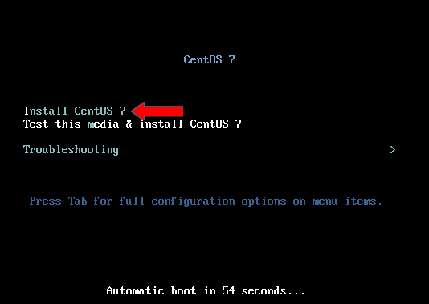
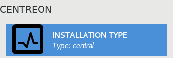
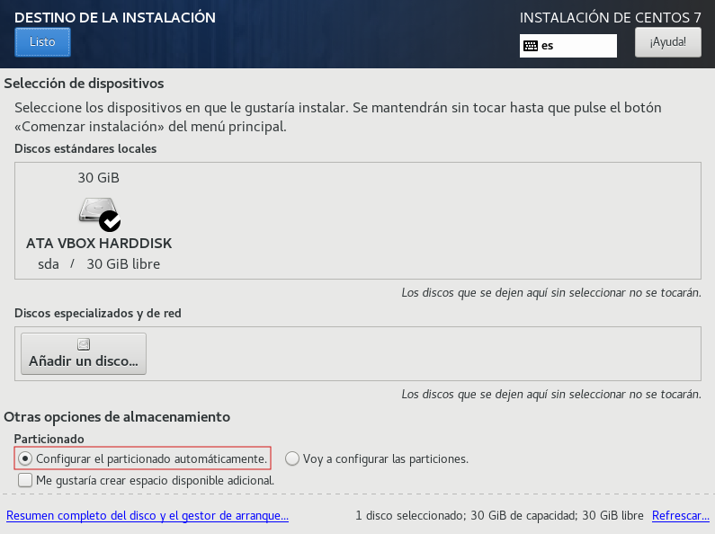
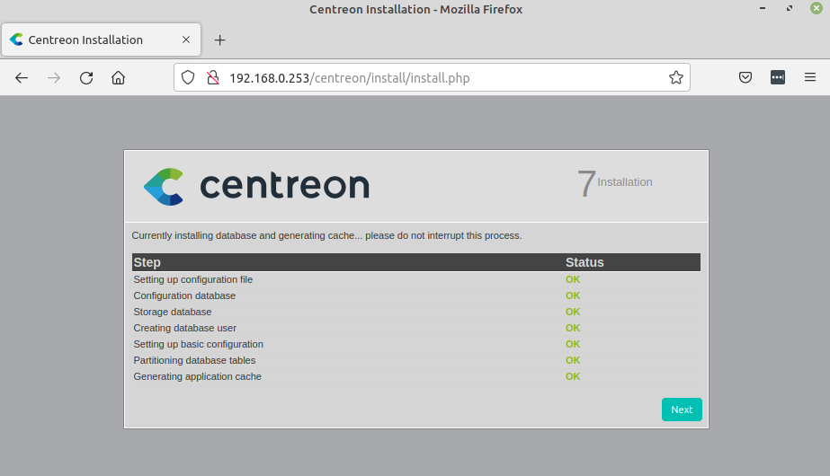
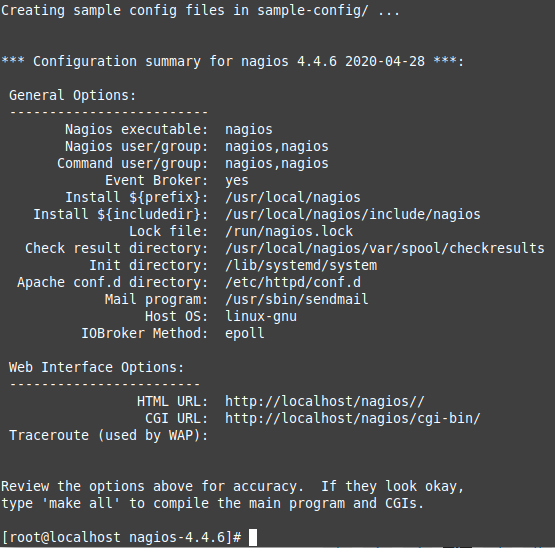
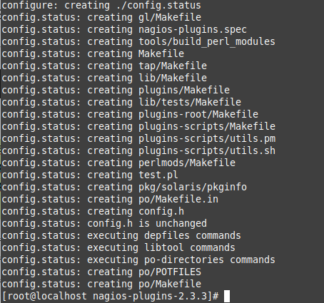
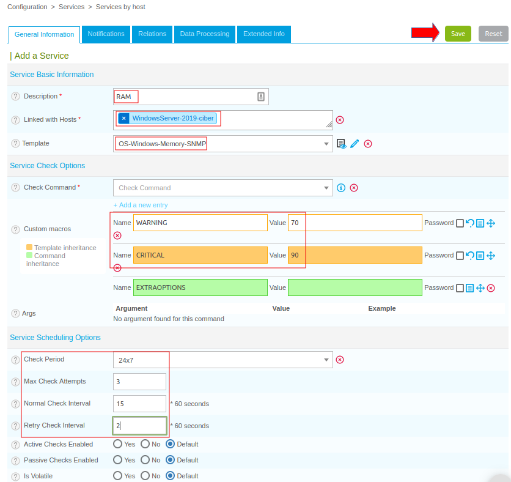
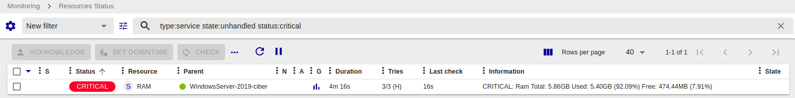

1.2 Monitorización con Centreon
1. Introducción
En este capítulo, se procederá a la instalación de una de las soluciones de monitorización que se describían en el capítulo anterior, en concreto, se describirá el proceso de instalación y configuración e Centreon.
Centreon es un software de monitorización “open source”, cuyo uso está muy extendido debido a su usabilidad y las capacidades de configuración que permite. Ofrece la posibilidad de utilizar gráficos en la presentación de los resultados, poder comparar diversos dispositivos monitorizados o simplemente ver el estado a lo largo del tiempo y tener un control. También cuenta con una opción de reporting de alertas vía telegram o por correo entre otros y una interfaz gráfica para administrar los dispositivos bastante intuitiva.
En su versión básica, Centreon se compone de una interfaz web bajo Apache (Centreon Web), de un servidor de base de datos relacional MySQL, de una base de datos gráfica RRD, de un programador (Centreon Engine), de un broker (Centreon Broker), de sondas de monitorización (Centreon Plugins) y de un conjunto de servicios y tareas planficadas. Todo se instala en un sistema operativo: GNU/Linux o Solaris.
Figura 1. Pila de software de un servidor central Centreon.
Hay que saber que Centreon se instala sobre CentOS y existen diferentes alternativas para su instalación, tal y como muestra la documentación oficial:
Empresas que utilizan Centreon
 |
||
| Partner de Centreon en España |
2. Requisitos
Una máquina virtual el siguiente Hardware:
- Disco de 30GB de capacidad mínimo.
- 4 GB de RAM.
- 2 núcleos de la CPU.
- Adaptadar de red Modo Puente. Se configurará el tcp/ip de la siguiente manera:
- red: 192.168.0.0/24.
- Dirección ip: 192.168.0.253/24.
- Gateway: 192.168.0.1 (interfaz LAN del router con acceso a internet).
- DNS: 192.168.0.1 (interfaz LAN del router con acceso a internet).
Respecto al software, se tienen diferentes opciones:
-
Hay que descargar la iso disponible en el sitio oficial de Centreon: https://download.centreon.com/. (versión 21.10 año 2022)
-
Descargar la ova para virtualbox o vmware (versión 22.10 año 2023).
Para este caso, se ha descargado la iso 21.10 para describir el proceso de instalación de Centreon (marzo 2022).
Por otro lado, se descarga la ova 22.10 (a fecha 27 de marzo de 2023), aunque puede que exista una versión más reciente que sea estable por lo que se podría utilizar esa, en cualquier caso, la instalación preparada debería ser bastante intuitiva de seguir.
3. Instalación
3.1 Instalación a partir de la ISO 21.10
Se procede a la descarga del fichero ISO.
Una vez se pulsa en Download, se redirige a una página donde hay que rellenar los datos “personales” para la descarga.
A continuación, hay que crear una máquina virtual con los requisitos para preparar el inicio de la instalación.
A continuación, se describen los pasos del proceso de instalación de CentOS.
Paso 1
Una vez se arranca la máquina virtual, aparece un menú donde hay que seleccionar 'Install CentOS 7'.

Paso 2
A continuación, hay que seleccionar el idioma y luego pulsar Continuar.
Paso 3
El siguiente paso es elegir el tipo de instalación que será Central con Base de datos (Central with database). En la primera pantalla, se pueden ver varias advertencias para la Instalación, ejemplo: Tipo de instalación. Para seleccionar el tipo de instalación, hay que pulsar sobre 'Installation Type', aparecerá una nueva ventana donde se pueden ver varias opciones para definir el tipo de instalación (en este caso se instala Centreon with database que consta de: la interfaz web, la base de datos, el motor de monitorización y el Broker.
Las posibles opciones son:
- Central with database: Instala Centreon (la interfaz web y la base de datos), el motor de monitorización y el Broker.
- Central without database: Instala Centreon (solo la interfaz web), el motor de monitorización y el Broker.
- Poller: Instala el recolector (el motor de monitorización y solo Broker).
- Database: Instala el servidor de base de datos (si se tiene instalado un servidor Central sin base de datos).
|  |
Paso 4
A continuación, se selecciona el destino de la instalación. En la nueva ventana, hay que asegurarse de que está marcada la opción “Con el particionado automático” y pulsar en Listo. También es posible configurar diferentes particiones para el disco, pero en nuestro caso de ejemplo, se dejará automático.
|  |
Paso 5
Una vez configurado el destino, se va a configurar la red. Para la configuración de red, se necesita conocer bien la IP que se le va a asignar al equipo (servidor de la red) o bien la que proporcione el servidor DHCP. Para este caso, se configura la red de manera manual, para ello, se pulsa sobre 'RED & NOMBRE DE EQUIPO'.
Paso 6
Una vez se selecciona la opción de Red & Nombre de Equipo, hay que introducir la configuración manualmente en la opción que pone “Configurar…” --> Ajustes IPv4 y añadir dirección, máscara de red y puerta de enlace, incluido los servidores DNS. Una vez se añade la configuración de tcp/ip, hay que pulsar Guardar, y en la nueva ventana, (figura derecha), deben aparecer los datos que se han configurado. El nombre del host, dependerá del contexto de la organización, es decir, para este caso donde el dominio es ciber.local, el nombre podría ser orion.ciber.local. Para este caso de ejemplo, se deja como localhost.domainlocal. Para continuar, hay que pulsar Listo.
Paso 7
Una vez completado el destino de la instalación y haber configurado correctamente la red, ya se puede comenzar la instalación pulsando el botón 'Empezar instalación'.
Paso 8
El siguiente paso es configurar la autenticación del sistema, bien mediante el usuario root o la creación de uno nuevo. En este caso, se configura una contraseña para el usuario root (recomendado).
|
Pulsar 'Listo' para continuar |
Paso 9
Al finalizar todos los pasos, el asistente ofrece la opción de reiniciar cuando termine de hacer las configuraciones oportunas. Para continuar, hay que pulsar 'Reiniciar'.
Paso 10
Una vez reiniciado, hay que actualizar el sistema y para ello, se tiene el comando “yum update” que actualiza todos los paquetes actualmente instalados a sus últimas versiones disponibles en los repositorios. Por otro lado, se tiene el comando “yum upgrade” que realiza la misma acción que “yum update”, pero una vez finalizado también elimina todos los paquetes obsoletos del sistema.
[root@localhost ~]#yum update
Paso 11
Una vez reiniciado, ya se puede hacer login. Para acceder a la administración de Centreon, se debe introducir en el navegador la IP configurada en el paso 6 (para este caso es 192.168.0.253) y debe salir una imagen como la que se puede observar en la figura de la izquierda. Tanto en la figura de la izquierda como la la derecha, hay que pulsar en Next, ya que solo son informativas.
Paso 12
Una vez pulsado Next, aparece una nueva ventana donde se pueden modificar las rutas de configuración para los diferentes directorios de acceso, pero se recomienda dejarlas por defecto. Para continuar, hay que pulsar 'Next'.
Paso 13
A continuación, más rutas que se han optado por dejar también por defecto (se aconseja dejarlas así salvo tener un conocimiento de la herramienta y configuración personal). Para continuar, hay que pulsar 'Next'.
Paso 14
A continuación, hay que Introducir las credenciales de acceso a la aplicación Centreon. Rellenar los datos para el usuario por defecto “admin”. Para continuar, hay que pulsar 'Next'.
Paso 15
El siguiente paso (Figura derecha) es configurar la conexión con la base de datos. En caso de haber modificar algún parámetro en los pasos previos, hay que dejarlos patentes en este apartado (puerto, nombre de la base de datos, etcétera.). Para este caso, hay que añadir la contraseña de la base de datos específica para Centreon y la de root, pero antes de realizar esto, hay que acceder al equipo CentOS y realizar un ALTER USER 'root'@'localhost' (figura izquierda) debido a que, en SQL (ya sea mysql o postgresql), los perfiles están definidos por el par (usuario, host). En mysql~MariaDB (nuestro caso), se definen con mayor precisión en la base de datos mysql, en la tabla de usuarios (que se escribe mysql.user). El usuario root@localhost (o root@127.0.0.1) está reservado para el administrador del servidor, para conectarse al servidor SQL. Este perfil no está destinado a ser utilizado por nadie más, es por eso que hay que ejecutar los siguientes comandos en el servidor CentOS para dar permisos a root en la base de datos y estableciéndole una contraseña. Los comandos son los siguientes:
[root@localhost ~]# mysql -u root -p
MariaDB [(none)]> ALTER USER 'root'@'localhost' IDENTIFIED VIA mysql_native_password USING PASSWORD('Camina-100');
MariaDB [(none)]> exit
Para continuar con el proceso, hay que pulsar 'Next'.
Paso 16
Una vez pulsado Next, el asistente comienza a realizar unas comprobaciones/configuraciones. Una vez finaliza, si está todo OK, hay que pulsar 'Next'.
|  |
Paso 17
Aparece una nueva ventana donde se pueden seleccionar los módulos que se desean instalar, para este caso, se dejan TODOS seleccionados. Para proceder con la instalación de los módulos, hay que pulsar 'Install'.
Paso 18
Una vez se han instalado, hay que pulsar en 'Next' y aparece una nueva ventana (figura derecha) donde hay que pulsar en 'Finish'.
Paso 19
Una vez finalizado el proceso, aparece una nueva ventana que es la página inicial de Centreon mediante la IP configurada en el paso 6 y donde , debe ya se pueden ingresar las credenciales de acceso al panel y empezar a configurar los equipos y los servicios que se quieran monitorizar.
3.2 Instalación a partir de la OVA 22.10
Se procede a la descarga del fichero OVA.
Una vez se pulsa en Download, se redirige a una página donde hay que rellenar los datos “personales” para la descarga.
Una vez descargada la OVA, se abre para ver su configuración e importarla.
En el siguiente enlace, tienes los pasos para la importación e instalación de la OVA.
4. Configuración inicial
Tras la instalación de Centreon se dispone de un servidor de monitorización que utiliza el protocolo SNMP para dicha labor. El siguiente paso es configurar dicho protocolo para que se puedan añadir futuros dispositivos.
Esta configuración inicial permitirá controlar otros dispositivos de la red de nuestra organización.
A continuación se describen los pasos en las siguientes pestañas.
Paso 1
En primer lugar hay que comprobar que efectivamente se tiene el servicio SNMP en funcionamiento en el servidor CentOS. El comando es el siguiente:
[root@localhost ~]#service snmpd status
Como se puede observar en la figura, el servicio se encuentra funcionando correctamente.
Paso 2
A continuación, hay que modificar la comunidad SNMP para usar una con un nombre identificativo y no la que viene por defecto, para ello se edita el fichero /etc/snmp/snmpd.conf con vi (nano no existe en CentOS) y donde hay que cambiar comunity public por comunity guia.
[root@localhost ~]#vi /etc/snmp/snmpd.conf
Una vez configurado, hay que reiniciar el servicio SNMP para aplicar cambios:
[root@localhost ~]#service snmpd restart
Paso 3
A continuación, se configuran otra serie de servicios de tal modo que se levanten con el inicio del sistema y para ello, primero se inician:
[root@localhost ~]#systemctl start centreontrapd
[root@localhost ~]#systemctl start centengine
[root@localhost ~]#systemctl start cbd
Los servicios son:
- Centreon Broker: cbd.
- Motor de Centreon: centengine.
A continuación, se ejecuta el comando para configurar que se inicien con el sistema:
[root@localhost ~]#systemctl enable centreontrapd
[root@localhost ~]#systemctl enable centengine
[root@localhost ~]#systemctl enable cbd
[root@localhost ~]#systemctl enable centreon
Paso 4
Para monitorizar el propio servidor y comprobar que se han realizado correctamente las configuraciones iniciales, se debe iniciar sesión en el panel de Centreon:
Paso 5
Una vez dentro, primero se procede a instalar unos plugins para futuras monitorizaciones. Para ello, hay que ir a “Configuracion/Plugin Packs”:
Paso 6
Una vez ahí, hay que instalar todos los pluggins posibles (el check verde de la esquina superior derecha es que se han instalado). Como se puede observar en la figura inferior, así quedarían instalados. Se puede observar que hay algunos que aparecen sobre un fondo apagado, eso quiere decir que son de pago. Con instalar los que aparecen en las capturas es suficiente para lo que se pretene hacer (gratuitos).
Paso 7
A continuación, se añade el host del servidor y para ello, hay que ir a “Configuration/Hosts/Hosts”. En la nueva venta, ha que pulsar sobre Add (ver figura derecha).
Paso 8
Una vez pulsado Add, ya se puede añadir el host rellenando su información personal como la que se puede observar en la siguiente figura.
Paso 9
Por último, hay que rellenar la información con las rutas que se configuraron en la instalación y la contraseña de la base de datos que se puso en su momento. También el intervalo en que se comprobará este host. Una vez rellenada la información, hay que pulsar el botón 'Save'.
Paso 10
A continuación, aparece el panel de Hosts con el host recién configurado. Para que detecte el host y comiencen a mostrar datos, hay que actualizar el poller y para ello hay que ir a su apartado de configuración personal:
Paso 11
Seleccionar el poller y exportar su configuración como se muestra a continuación (añadiendo Central en figura derecha) pulsando en 'Export'.
Paso 12
Una vez exportado, se comprueba la consola de las acciones realizadas.
Paso 13
Si se accede al panel de Pollers, se puede comprobar que ya se encuentra activo. Puede ser que con la opción reload que se seleccionó en el paso 11, salga que no está corriendo el poller, no obstante, al ejecutar un reinicio del equipo Centreon una vez finalizada la instalación, ya debería funcionar todo correctamente.
Paso 14
Con esto, ya se tiene monitorizado el servidor Centreon y con ello la primera monitorización realizada con éxito. En la Figura inferior, se puede observar que ya se tiene el proceso con PID 1162 activo y monitorizando el sistema.
5. Instalación plugins Nagios Centreon
Con el objetivo de monitorizar los servicios activos por determinados puertos y hacer un poco más completo el servidor de monitorización Centreon, se van a instalar una serie de plugins y para ello, se necesita instalar el core de Nagios.
En este apartado se describe cómo configurar Centreon de modo que se pueda exprimir la monitorización al máximo. Este proceso se realizará desde la línea de comandos en su totalidad (o casi), así que hay que prestar especial cuidado a los comandos que se verán veremos a continuación en la siguiente sección de pestañas.
Paso 1
En primer lugar se comienza con la instalación de las “Herramientas de Desarrollo”, el comando es el siguiente:
[root@localhost ~]#yum group install “Development Tools”
Si aparece el error de la figura siguiente, quizás se tengan repositorios configurados que entren en conflicto con este grupo de paquetes.
Si el comando anterior da un error, hay que ejecutar el comando es el siguiente:
[root@localhost ~]#yum clean all
[root@localhost ~]#yum groupinstall --disablerepo=\* --enablerepo=base,updates,cr "Development Tools"
Se pueden consultar los grupos disponibles e instalados con el siguiente comando. Como se puede observar en la figura, después de ejecutar el anterior comando ya se tiene el grupo de "Herramientas de Desarrollo instalado".
[root@localhost ~]#yum grouplist
Paso 2
A continuación, hay que descargar el core de nagios (a fecha 25/02/20022 la versión es la 4.4.6) e instalarlo, pero antes, hay que instalar la herramienta wget:
[root@localhost ~]#yum install wget
[root@localhost ~]#wget https://assets.nagios.com/downloads/nagioscore/releases/nagios-4.4.6.tar.gz
Paso 3
A continuación, hay que descomprimir el fichero descargado:
[root@localhost ~]#tar xvzf nagios-4.4.6.tar.gz
Paso 4
Una vez descomprimido el fichero, hay que cambiar al directorio llamado nagios-4.4.6 y ejecutar el siguiente comando:
[root@localhost ~]#cd nagios-4.4.6
[root@localhost nagios-4.4.6]#./configure --prefix=/usr/local/nagios --with-cgiurl=/nagios/cgi-bin --with-htmurl=/nagios/ \
--with-nagios-user=nagios --with-nagios-group=nagios
A continuación, hay que ejecutar una secuencia de comandos para completar la instalación de nagios y luego descargar e instalar los plugins. Se usar el comando make ya que ayuda a compilar los programas.
[root@localhost nagios-4.4.6]#make all
[root@localhost nagios-4.4.6]#make install
[root@localhost nagios-4.4.6]#make install-init
[root@localhost nagios-4.4.6]#make install-commandmode
|  | |||
| Resultado configure | Resultado make install | Resultado make install-init | Resultado make install-commandmode |
Paso 5
A continuación, hay que descargar los plugins:
[root@localhost ~]#wget http://nagios-plugins.org/download/nagios-plugins-2.3.3.tar.gz
Una vez se ha descargado el fichero, hay que descomprimirlo:
[root@localhost ~]#tar xvzf nagios-plugins-2.3.3.tar.gz
Paso 6
Una vez descomprimido el fichero, hay que cambiar al directorio llamado nagios-plugins-2.3.3 y ejecutar el siguiente comando:
[root@localhost ~]#cd nagios-plugins-2.3.3
[root@localhost nagios-plugins-2.3.3]#./configure
[root@localhost nagios-plugins-2.3.3]#make && make install
|  | |
| Resultado comando ./configure | Resultado comando make && make install |
Paso 7
Si se ejecuta el comando “ls /usr/local/nagios/libexec”, la respuesta al comando debe ser el siguiente:
Con este último paso, ya quedarían instalados los plugins de Nagios y listos para usarse.
Referencias Nagios
6. Monitorización Windows
En este apartado, se describe el proceso para monitorizar un equipo Windows con Centreon, para ello, se utiliza un equipo Windows Server 2019 Datacenter configurado en la misma red que el servidor CentOS. A continuación se describen los pasos en las siguientes pestañas.
Configuración del Equipo Windows Server 2019:
- dominio: ciber.local.
- Adaptador de red en modo puente.
- Dirección ip: 192.168.0.200/24.
- Gateway: 192.168.0.1 (interfaz LAN del router con acceso a internet).
- DNS: 192.168.0.1 (interfaz LAN del router con acceso a internet).
Paso 1
Para empezar, hay que instalar el servicio SNMP que va a permitir monitorizar el equipo. Aunque se pueden 'Activar o desactivar las características de Windows' desde la interfaz gráfica, en este caso se realiza mediante un cmdlet de Powershell, pero antes, se comprueba si está instalada con el siguiente comando:
PS C:\Windows\system32\> Get-WindowsFeature -Name "SNMP*"
Como se puede observar, no está instalado el servicio SNMP por lo que se procede a instalarlo:
PS C:\Windows\system32\> Install-WindowsFeature SNMP-Service -IncludeAllSubFeature -IncludeManagementTools
A continuación, hay que reiniciar el equipo.
Una vez se inicia sesión, se verifica que si el servicio SNMP está instalado ya.
PS C:\Windows\system32\> Get-WindowsFeature -Name "SNMP*"
En el siguiente enlace, se puede consultar cómo realizar este proceso en Windows 10.
Paso 2
Una vez se tiene el servicio instalado, hay que configurar la comunidad y añadir el equipo al servidor Centreon. Para añadir el equipo a la comunidad, se deben seguir los siguientes pasos que quedan reflejados en las siguientes figuras, donde se accede a services para buscar el servicio snmp y agregar el mismo a la comunidad SNMP del servidor Centreon, que para este caso es guia_sshteam (ver apartado 4. Configuración de Centreon).

{kind=link}
{kind=link}
{kind=link}
{kind=link}
{kind=link}
{kind=link}
{kind=link}
{kind=link}
{kind=link}
{kind=link}
{kind=link}
{kind=link}
{kind=link}
{kind=link}
{kind=link}
{kind=link}
Paso 3
A continuación, hay que añadir el equipo en Centreon con su plantilla de Windows correspondiente, para ello, hay que ir al navegador en el panel web de Centreon y añadir un host con la IP del equipo Windows Server, la plantilla de Windows y en este caso monitorizado desde el servidor central y la comunidad correspondiente. Una vez se introducen los datos, hay que pulsar el botón 'Save', y a continuación, si todo ha ido bien, aparece el host creado (figura derecha).
{kind=link}
{kind=link}
Paso 4
A continuación, hay que acceder a Pollers para exportar la configuración, aplicar las acciones y revisar que se ha creado correctamente. No hay que olvidar hacer chek en el Poller Central antes de realizar la exportación. En la figura del centro, se ha seleccionando: Generate Configuration Files, Run monitoring engine debug (-v), Move Export Files y Restart Monitoring Engine y seleccionado en Method --> Restart (ver figura inferior derecha).
{kind=link}
{kind=link}
{kind=link}
Si se accede al panel de Monitoring --> Resources Status y no está el nuevo host, reiniciar el servidor Centreon.
Paso 5
Una vez que ya están los paquetes ICMP (ping) monitorizados, se pueden monitorizar también más servicios o características, como por ejemplo: CPU, disco, RAM, etc. Como ejemplo, se realiza un ping al servidor Windows Server 2019.
Paso 6
A continuación, se van a añadir servicios para monitorizarlos y para ello, hay que acceder a Configuración --> Services --> Services by host. En la ventana que aparece (figura de la derecha), hay que pulsar en 'Add'.{kind=link}
{kind=link}
Paso 7
A continuación, hay que rellenar los valores del servicio, que como ejemplo, se va a realizar la monitorización de la RAM en el host creado anteriormente. Para guardar el servicio, hay que pulsar el botón 'Save'.
|  |
A continuación, se describen los valores que se han establecido:
|
Paso 8
Del mismo modo visto, se podrían añadir otros servicios, ejemplo, se añaden el de CPU y SWAP:
Paso 9
Por último, sólo queda volver a actualizar el poller correspondiente (que en este caso es el Central) y corroborar los resultados. Si se observar la figura de la derecha, se tiene 'Conf Changed' a YES, por lo que es un indicativo que hay que actualizar el poller pulsando en 'Export configuration' como ya se ha realizado en anteriores ocasiones, es decir, seleccionando: Generate Configuration Files, Run monitoring engine debug (-v), Move Export Files y Restart Monitoring Engine y seleccionar en Method --> Restart (ver figura inferior derecha).
Paso 10
Si se accede a la Monitorización (Monitoring --> Resources Status), se pueden ver los servicios con su información de estado, descripción del último dato obtenido, etcétera.
Paso 11
Como comprobación, se ha realizado una prueba para observar que, efectivamente existe un "warning" cuando se supera el 70% de uso del SWAP y un critical cuando se supera el 90% de uso de la RAM. Para obtener estos datos, se han ejecutado procesos intensivos de memoria y cpu en el servidor Windows Server 2019. En la figura inferior, se muestra la barra de estados donde se indica 1 rojo (crítico), 1 naranja (1 warning) y 10 verdes (correctos).

7. Crear vistas de datos
En este apartado, se presentan los datos de un servicio o un host en un gráfico en Centreon, de forma que sea algo más visual y se tenga constancia de los consumos a lo largo del tiempo.
Paso 1
Para comenzar, hay que al panel web de Centreon e instalar los módulos de vistas. Para ello, ir al apartado “Administration/Extensions/Manager”:
Paso 2
Una vez en el panel de Extensiones, hay que añadir los widgets que aparecen en la siguiente figura. Para añadir un widget, hay que pulsar en: . Una vez añadidos los widgets, ya se pueden añadir y personalizar gráficos.
Paso 2
Desde el apartado “Home/Custom Views”, hay que pulsar en el icono del 'pencil', y a continuación, en añadir una nueva vista “+ Add view”. Al añadir una vista, esta se puede personalizar mediante columnas de gráficos, para este caso, se selecciona 1 columna y como nombre, 'Host-Prueba'. Para añadir la vista, hay que pulsar en el botón 'Submit'.
Paso 4
Una vez añadida la vista, hay que seleccionar una plantilla desde el apartado “Add widget”. En él ya hay ejemplos definidos, por ejemplo, ver el estado de los hosts que hay monitorizados “Host Monitoring. A continuación, se le da un título y se pulsa el botón 'Submit'.
{kind=link}
Paso 5
Al pulsar 'Submit', aparece una nueva ventana con la vista creada.
Paso 6
En cada vista creada, se pueden personalizar aquellas columnas de datos que se quieran que aparezcan. Para ello, hay que pulsar sobre el icono de la llave inglesa. . En la ventana que aparece, se pueden seleccionar opciones como por ejemplo: las columnas que se quieren ver, el orden, cada cuanto se quiere que se actualice la información, etcétera.
Paso 7
Con esto ya se tendría cubierto la parte de gráficos. Si se pulsa sobre el icono del gráfico del host correspondiente, se accede al panel de gráficos.
{kind=link}
{kind=link}
8. Monitarización de certificados web en Centreon
En este apartado, se describe el proceso para monitorizar una página web, en este caso de ejemplo, comprobar los certificados de una web.
Paso 1
En primer lugar,hay que empezar creando el host correspondiente. En la siguiente figura, los primeros 3 campos hacen referencia a la página que se va a monitorizar. La plantilla que hay que seleccionar es 'generic-active-host'. Como se puede observar, no hace falta saber la IP del dominio de la web, simplemente con poner el dominio es suficiente, para este caso de ejemplo es jcrequena.github.io.
Paso 2
A continuación, hay que guardar. Como se puede observar en la figura, ya se tiene el host.

Paso 3
A continuación, hay que exportar la configuración (poller Central) para aplicar las acciones de inicio.
 |
 |
Paso 4
A continuación, para comprobar el certificado, se debe crear un comando llamado “check”. Para ello, hay que acceder a 'Commands' --> 'Checks' y configurar el comando según la figura Central. La figura de la derecha, aparece cuando se pulsa el botón 'Describe argumentes'. En esta venta, se pueden definir valores de argumentos que se pueden utilizar en el comando, ejemplo: $ARG1$: jcrequena.github.io. PAra este caso, se configura el comando con los parámetros del mismo sin el uso de la asignación de variables para los argumentos.
{kind=link}
{kind=link}
Paso 5
Ahora hay que asociar el comando que se acaba de crear al host. Para ello, hay que añadir un nuevo servicio al host que consistirá en asociarle el comando Certificados que se acaba de crear. Para este caso, se añade al host el campo 'Check Comman' con el valor de Certificados que es el comando creado anteriormente.
Paso 6
A continuación, hay que exportar la configuración:
{kind=link}
Paso 7
Si se accede a 'Custom Views', se puede observar que el host está levantado y ha recuperado el periodo de validez del sitio web. En la información aparece un Warning, ya que el certificado expira en pocos días, en concreto, 17 días.
Nota: Puede que haya que reiniciar el servidor centreon.
Paso 8
Otra forma de ver el resultado es accediendo a 'Resource Status', se puede observar que el host está levantado y ha recuperado el periodo de validez del sitio web.
Paso 9
Si se accede al detalle haciendo click sobre Web_JCRequena, se obtiene mucha más información.
9. Monitorización GNU/Linux
En el siguiente enlace, tienes la documentación oficial de Centreon para monitorizar un equipo GNU/Linux con SNMP.
10. Referencias
- Commands-Centreon
- Github - Centreon
- https://www.bujarra.com/nagios-monitorizando-servidor-centreon/
- https://ciberseguridadtotal.com/centreon-herramienta-de-monitorizacion-open-source/
- Monitorización de Sistemas Nagios - Centreon
- https://docs.centreon.com/docs/getting-started/monitor-linux-server-with-snmp/
- https://www.bujarra.com/monitorizando-un-equipo-linux-con-centreon-ejemplo-con-una-raspberry-pi-temperatura-de-su-cpu/
Obra publicada con Licencia Creative Commons Reconocimiento No comercial Compartir igual 4.0